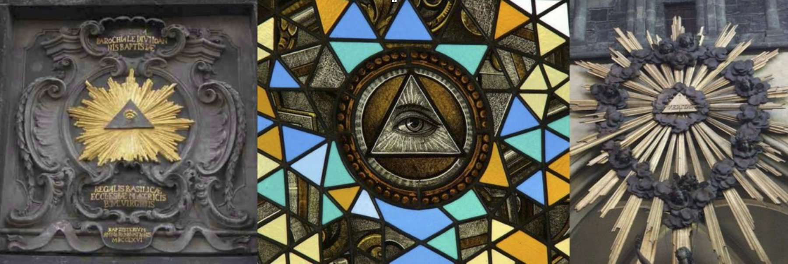
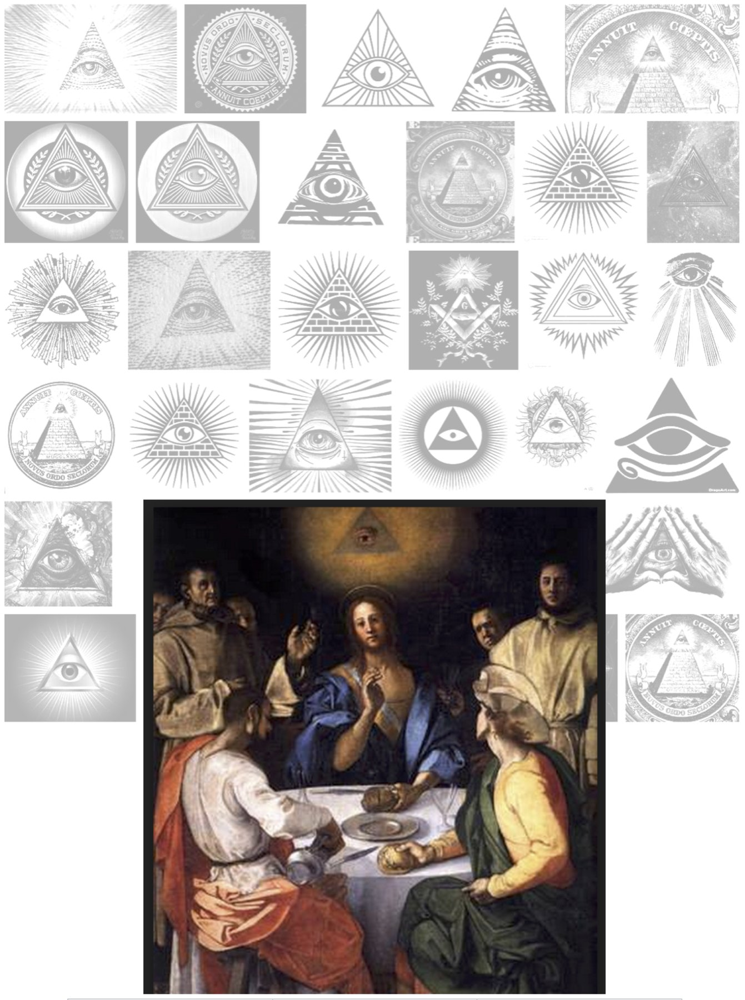
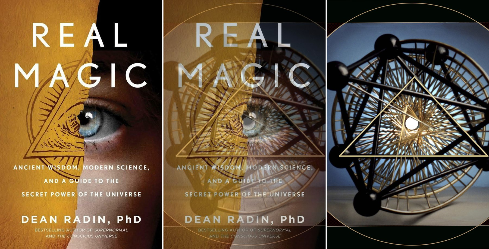
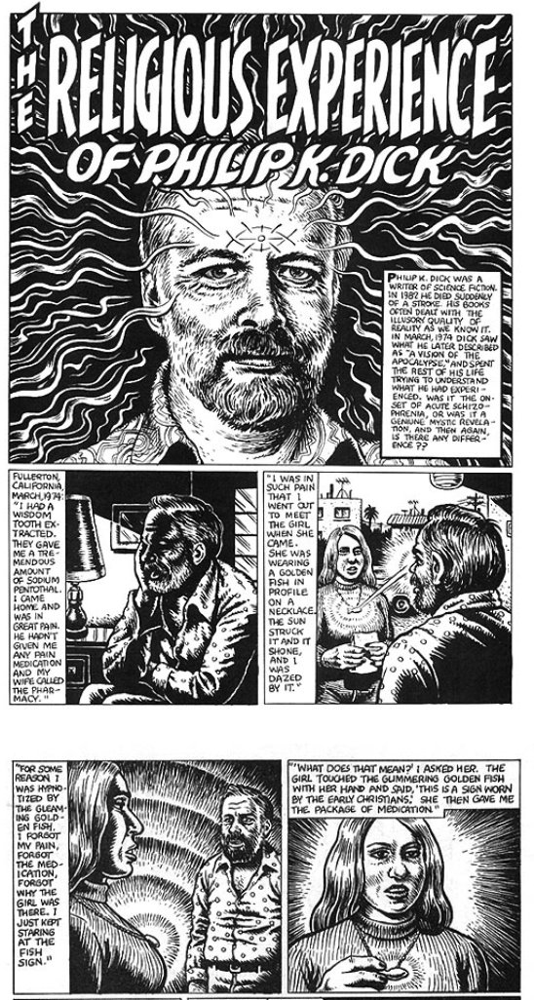
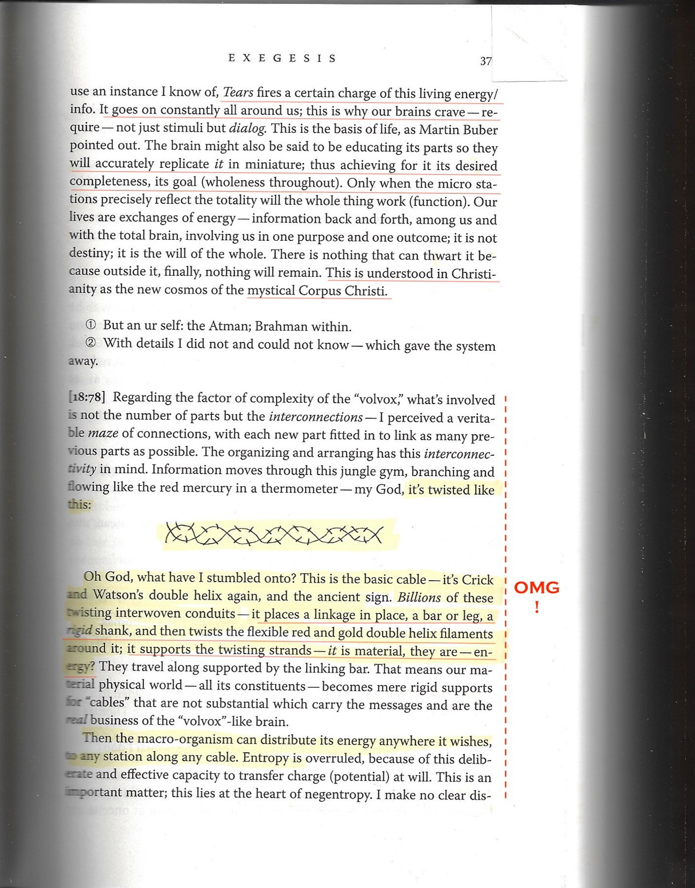
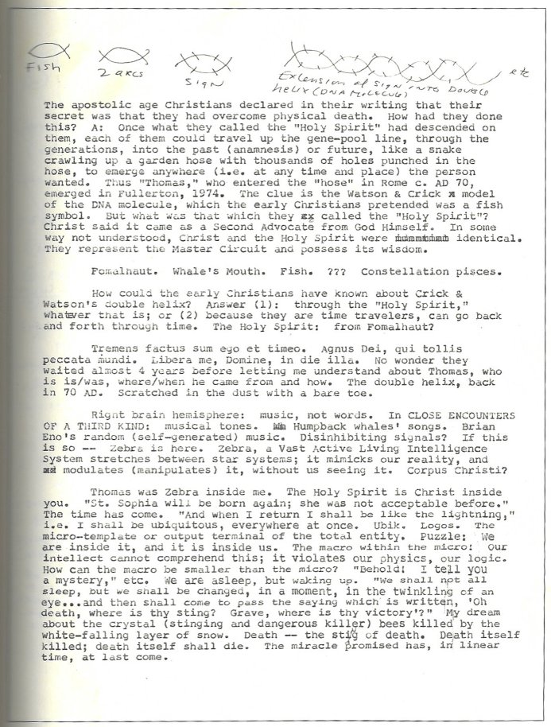

P3One Form, Many Shadows
Similarities & Correlations of TetraWave Geometry to
Religious & Metaphysical Symbols
Ouroborus
Oculus Dei
Caduceus
Vesica Pisces
Kundalini
Eye of Horus
Hara Line
The True Vine
Ida Pingala Sushumna
Trinity - 3 in 1
Ying - Yang
Mandorla
Djed Column
Holy Grail
Sri Yantra
Nimbus
Chakras
3 Steps of Vishnu
Cintamani Stone
Vortex
Rainbow Body
Ajna Chakras
Oculus Dei - Eye of God - Eye of Providence



"I Am The True Vine"
At the Core of TetraWave?
The "Vision" of a Science Fiction Writer
(Was PKD Hit by the Core of TetraWave?)

2-3-74

PKD's "Orthogonal Time ?
Like the thousand "Tee" Connections in a garden hose, each TOT can
share an "Orthogonal" or 90º connection with a reverse handed tetrahelix.
